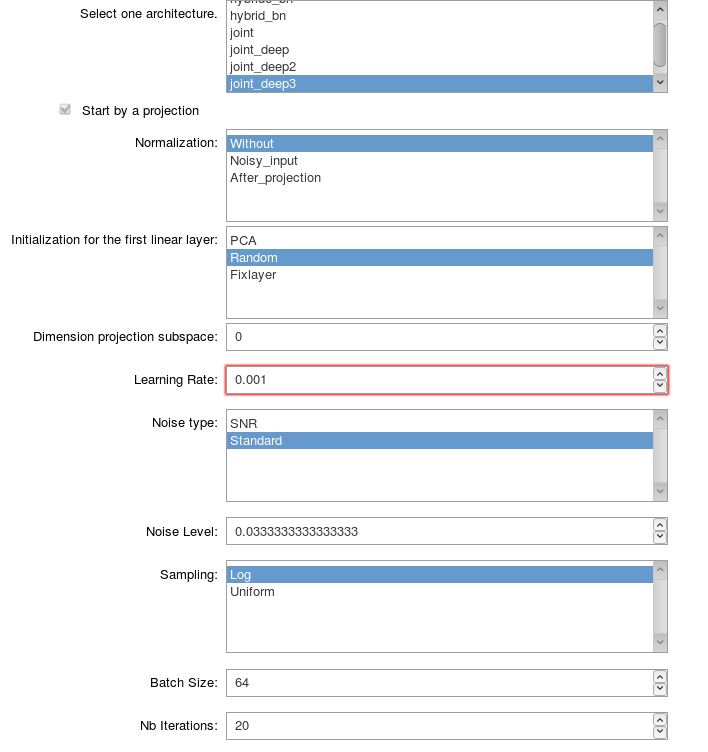

Saving a settings file¶
In order to launch a training, you need to save the setting file using the interactive tools contained in the folder
notebooks:offline_settings_training.ipynb. In this page, we present the different parameters that you will be asked to define. This description will also allow to you to completely understand how flexible is the model implemented (i.e. what you can do using directly this project and what you can’t).
The following screen shot presents an example of the interactive tool to define the settings for a training.

General parameters for training¶
name_modelString Name of the architecture of the network. The name is chosen among the architecture defined in the package MRF.models.
If the chosen model starts by a projection :
normalizationString Type of normalization of the data. The possible types of normalization that can be used are defined in the classNormalizationof the module Training_parameters.initilizationStringType of initilization for the weights of the first linear layer which should perform the projection. The possible types of initialization that can be used are defined in the classInitializationof the module Training_parameters.dimension_projectionIntDimension of the subspace on which the projection will be performed.namepcastrAbsolute path to the file containing the basis functions obtained with an online PCA algorithm in order to initalize or define the first linear layer supposed to perform the projection. This file needs to be a.matfile with the basis functions saved with the key wordbasis. The basis functions need to be saved with the size(number of functions) x (length fingerprint).optimizerStringName of the optimizer used for the training. The possible names to use are defined in the classOptimizerof the module Training_parameters.lrFloatLearning rate.noise_typeStringType of noise that you want to use. The different types of noise are defined in the module Training_parameters.noise_levelFloatLevel of noise that you want to use.batch_sizeIntBatch size.nb_iterationsIntNumber of iterations.nb_epochsIntNumber of epochs.complexBoolSet toTrueif the input signals are complex valued.lossArray of StringType of loss used. The array has a length 5 corresponding to the 5 parameters (\(m_{0}^s\), \(T_1^f\), \(T_{2}^f\), \(R\) and \(T_{2}^s\)). The i-th element of this array gives the type of transformation applied to the parameter i. The different type of losses are defined in the class Loss in the module Training_parameters.paramsArray of IntDefine the parameters that you want to estimate. Number 0 corresponds to \(m_0^s\), number 1 to \(T_1^f\), etc. (The details are defined in the the module Training_parameters with the vectorsnametoparamandparamtoname).minpdFloatMinimum proton density.maxpdFloatMaximum proton density.save_nameStringName given to your training.validationBoolBoolean which is True if you want to track validation loss and errors during the training.If
validationis True :* `validation_size` **Int** Number of fingerprints used for the validation dataset.nb_filesStringNumber of files used for training and validation. I recall that your files needs to be saved in a folder with a name that you can choose and that should be located in MRF/Offline/loading_data.path_filesStringName that you gave to the folder located in MRF/Offline/loading_data which contains the files. Two different type of files should be saved in this folder:the files fingerprints1.npy, fingerprints2.npy, … Each file contains an array of size n x (length fingerprint) where n is an integer that should be greater than the batch size chosen. Each fingerprint should be computed considering that the proton density is equal to 1.
the files params1.npy, params2.npy, … Each file contains an array of size
n x (length fingerprint)and gives the parameters used to compute the fingerprints saved in the files fingerprints1.npy, fingerprints2.npy, …If your loss requires the knowledge of the Cramer Rao Bound, you also need to save n this folder the files CRBs1.npy, CRBs2.npy, … Each file contains an array of size
n x 6and gives the Cramer Rao Bounds for the parameters \(m_{0}^s\), \(T_1^f\), \(T_{2}^f\), \(R\), \(T_{2}^s\) and \(M_0\) in this order.
If validation is True :
small_validation_sizeInt Number of fingerprints used for the smaller validation dataset.